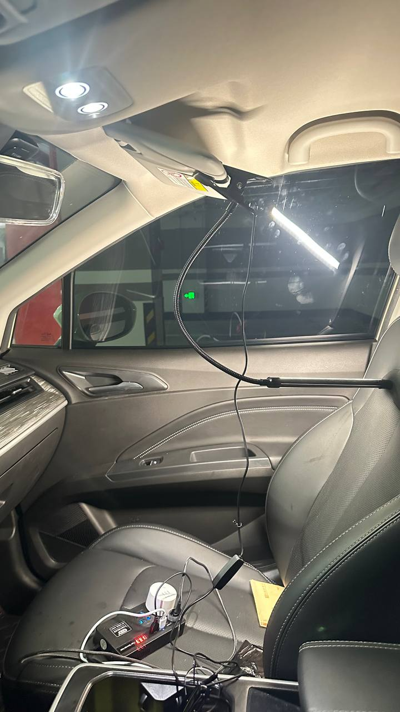

Working in an EV Car | Original
Working in an EV Car
Recently, I tried working in my EV again. I had previously used a portable desk in the car, but it was still inconvenient. I needed to use it in the back seat instead of the main seat.
Recently, I bought another type of large, portable, foldable car desk. It was larger and originally designed for Tesla, making it a perfect match for Tesla cars. However, for other types of electric vehicles, there are still ways to install it, such as using a packet of paper to fill up the empty space and support one side of the desk.
In actual use, I found that in the front, my legs supported it instead of the imagined paper packet. Additionally, my mobile phone fits perfectly on the desk. There is a specific slot to hold mobile phones without letting them slip.
My mobile phone is an iPhone 14 Pro Max, with a screen size of 6.7 inches. The mobile phone slot is just the right size.
Regarding the electric lamp, I have shared details in another essay.
I bought my EV around September 2022, and its running distance has reached approximately 56,000 km as of July 2025. I have used it extensively.
I have realized that in life, there are many products whose full potential or functionality we don’t utilize. They have a lot of possibilities. We need to learn how to use them wisely and derive the most benefits from them. It’s not about the money; we have already spent some to acquire them. The most important thing is to learn and think.
When selecting the title of this essay, I considered whether I should include “EV” in it. Yes, I should. In a gas-powered car, it is not easy to work inside due to the loud engine noise and fuel costs. However, an EV is perfect for working in the car.
Another thing to think about is where should I go. What’s beautiful scene I want to view from my car? What’s good places will I want to go? Human are still poor at this. Urbanizaion just happen in recent decades in China. People will go to tourism spot or shopping mall in weekened. Basically, in Earch, there are mountains and rivers. There is a chinese idom syaing like this, travel bewteen mountain and play with water.
I have a DJI drone DJI mini 2. One way to find spot is through DJI community. There are recommmend DJI shooting places there. Another ways is to recall my memory, in Guangzhou, go to Changlong, some carniva, Beijing Street, Upside and down nine road, and Guangzhou tower, Baiyun mountain.
I think travel is like anythine else, you need to do a lot and then you will more places or tourisum spot to visit. It is software or programming. YOu know more then you know more that you don’t know.
The liuxi river in Guangzhou is good. I want to approach them in different places. It is just like ocean. You can see them in differnt beaches with different feelings. I like ocean and beach a lot. It is probably when I grown up, I didn’t see that much. I still remember the first time I see the beach, the dameisha beach in Shenzhen.
I have two foldable chair in my car. I can use them but that for outside, it doesn’t have air conditioner. So probably , in the season when I don’t need air conditioner, I probably go out more like the winter or early Spring or late fall.
I am sure I live in the future with this way. I live in Guangzhou for around 15 years as of 2025. But there are still a lot of places I didn’t go, especailly for those office buildings or department community. Besides my home or my employer’s office, why will I go to another office building.
It can be understood that If I am startup founder and go to other office building to meet people to discuss about business things.
I seldom do it. I just sometimes go to department buildings where my relatives live in there.
 Source: Self-screenshot
Source: Self-screenshot
 Source: pinduoduo.com
Source: pinduoduo.com
Bright and Convenient USB-Powered Lamp for Car Use
Using a lamp in my car makes the interior bright, so the brightness inside and outside is approximately the same. This helps my eyes feel more comfortable while driving. I chose a USB-powered lamp without a battery. This means the socket connected to the cigarette lighter in my EV car can power the lamp. When I lock the car, the lamp automatically turns off.
Before, I used one that had a battery. Because this kind of lamp is often used at home for studying, etc., having a battery makes them easy to move around without needing to connect to a socket. So, with a lamp that has a battery, I needed to touch the base of the lamp to turn it off.
Now I use a USB-powered lamp without a battery, so I don’t need to turn it off manually when I leave and lock the car.
In the photo, you may observe the smart switch in the socket. I put it there without figuring out how to use it. I saw this at my home and thought that I could use it in the car one day. At home, I use the smart switch to control the water dispenser, which can be really disturbing when it makes noise while I am sleeping.

Source: Self-captured